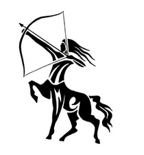

Sagittarius / Dhanu Rashi
Master Planet : Jupiter / Guru
Ye ,Yo, Yho ,Bha ,Bhi, Bhee ,Bhu, Bhoo ,Dha ,Pha, Fa ,Dhaa, Dhha ,Bhe, Bhay
This Rashi sign is made up of full Nakshatras of Moola and Poorvashada and the first charan of Uttarashadha. The people under this sign are men of principle, following their religion. They are the nucleus of their families, earning for all.
They have great potentials, happy and lucky attitude towards life. They are enterprising, logical, leaders, have healthy attitude towards life. They gain popularity through their actions and intelligence. They are optimistic, truthful and generous. They are loyal, independent, modest, and virtuous. They attain their goals in life. They are usually born in rich families and do not acquire riches by their efforts.
They have long faces and necks and other parts of body attractive but conspicuous. They are soft-spoken and quite popular. They stick to their friendship. They are courageous but tolerant. They lose their hair of their head early. They work without thinking of fruits. Even if they are traders they are honest. They are quick to anger; are more idealistic and dominating. They attain rise of destiny at the age of 22-23 years.